Fast, on every core
Flux scans and copies in parallel, hard-links or deduplicates what didn't change, and uses reflinks on Btrfs and XFS. In benchmarks, a snapshot with few changes took well under a second.
Flux keeps complete snapshots of your folders on an external drive or an SSH server.
Unchanged files cost almost nothing, later backups take seconds, and getting a file
back is a few clicks. Use the desktop app, the flux
command, or both.
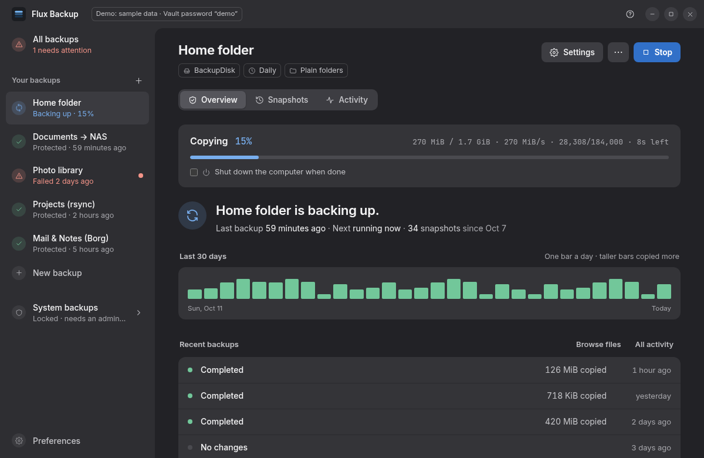
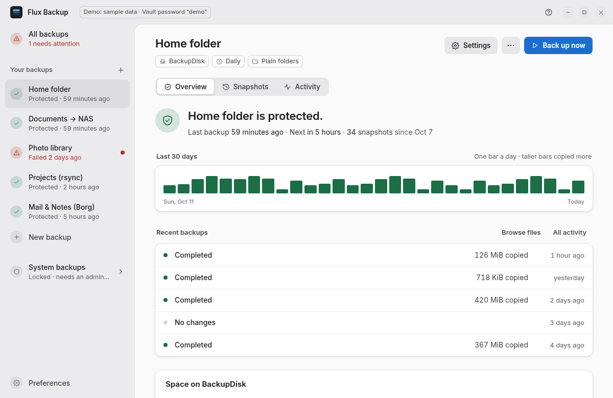
What it does
Flux takes the model of Back in Time (profiles, scheduled snapshots, include and exclude lists, smart retention, easy restore) and rebuilds it for more speed, more capability and a modern interface.
Flux scans and copies in parallel, hard-links or deduplicates what didn't change, and uses reflinks on Btrfs and XFS. In benchmarks, a snapshot with few changes took well under a second.
Search every snapshot by name, see every version of a file, or open a copy without restoring anything. Before a restore, Flux shows what it would add, keep aside or replace.
Schedules are systemd timers: at set times, every few hours, or when you plug in the drive. Missed backups catch up after boot; scheduled runs can wait for mains power or a non-metered connection, and you can pause them for an hour or a night.
Keep 7 daily, 4 weekly, 12 monthly and 5 yearly, or set your own rules and see exactly which snapshots each one keeps. Named and pinned snapshots are never removed automatically.
Flux tells you in words when something needs you: a drive not seen for days, repeated failures, a disk filling up (with a forecast of when). An interrupted backup damages nothing, and every byte can be verified, monthly if you like.
Back up to a USB drive, a folder or an SSH server through your own ssh setup. System profiles cover /etc, /root and other users' files, unlocked with an administrator password.
Two engines, one tool
Each profile picks how its snapshots are stored. Both are browsed, restored, scheduled and pruned the same way.
rsync.Pick Mirror when you want to reach your files in an emergency with nothing but a file manager.
flux mount.Pick Vault for places you don't fully trust, for many similar machines sharing one target, or to save space.
Compatibility mode
Prefer industry-standard tooling? Let rsync or Borg write your
backups in their own native formats, and keep Flux as the app you use every day. If Flux
were ever gone, you could still list, restore and keep making backups with that tool alone.
rsync, with --link-dest: unchanged files are hard links.cp or rsync. No program or password needed.Pick rsync if you want to open your backups with nothing but a file manager.
borg itself, with repokey-blake2 encryption and zstd compression.borg extract or borg mount and your passphrase.Pick Borg for encrypted, compact backups with a tool many people already know.
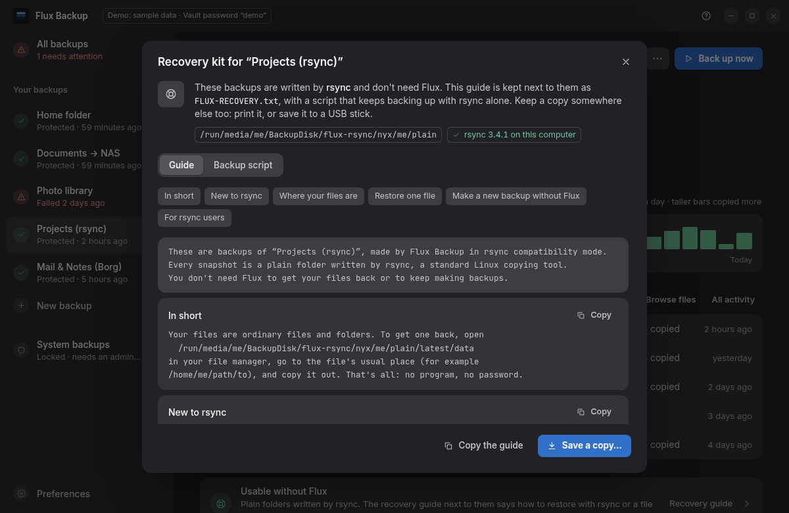
FLUX-RECOVERY.txt gives the exact commands for your profile, written for newcomers and experts alike, and flux-backup.sh keeps backing up with the tool alone.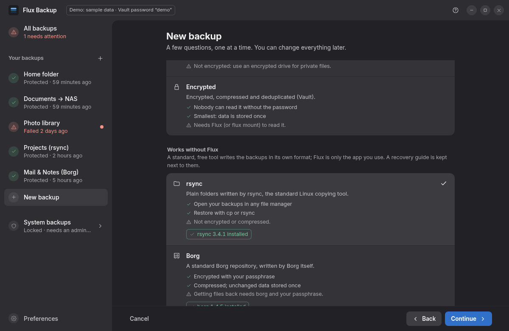
Moving on, or using two tools? Any profile exports as a borgmatic configuration or a restic, rsync or Borg script, with a list of what doesn't carry over. Flux profiles export and import too. How export works.
The desktop app
Setting up a backup is a short guide, one question per step: what, where, how it's protected, and when. Everything else is a clearly labelled row showing its current value, which opens just that group of settings. Backups run as separate processes, so they keep going when you close the window, and the app follows every backup live, however it was started. New in 0.2: search across snapshots, versions of a file, a restore preview, a space forecast, and pausing scheduled backups.
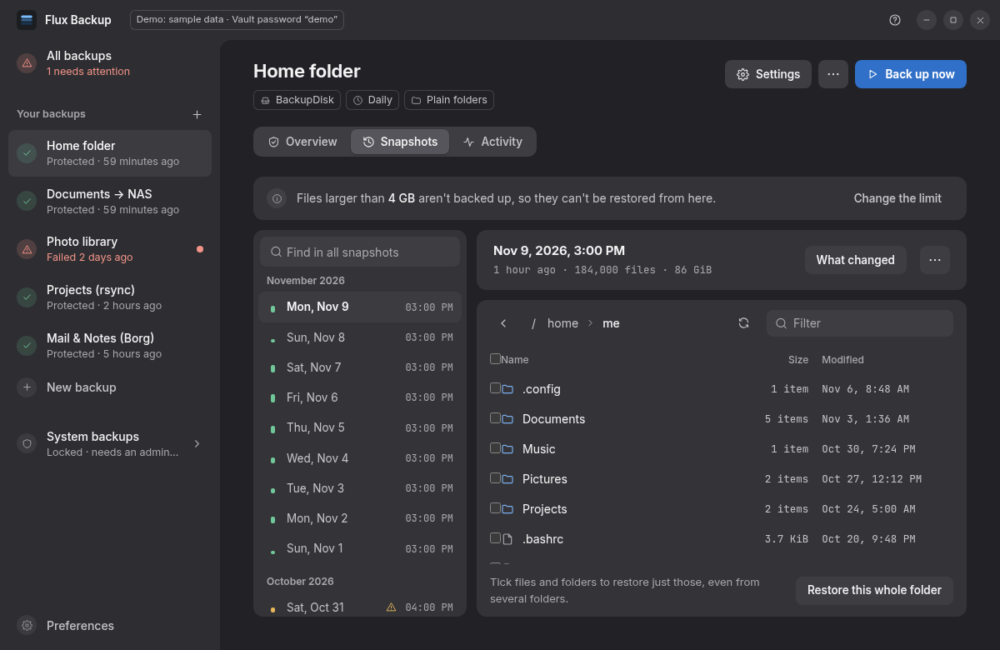
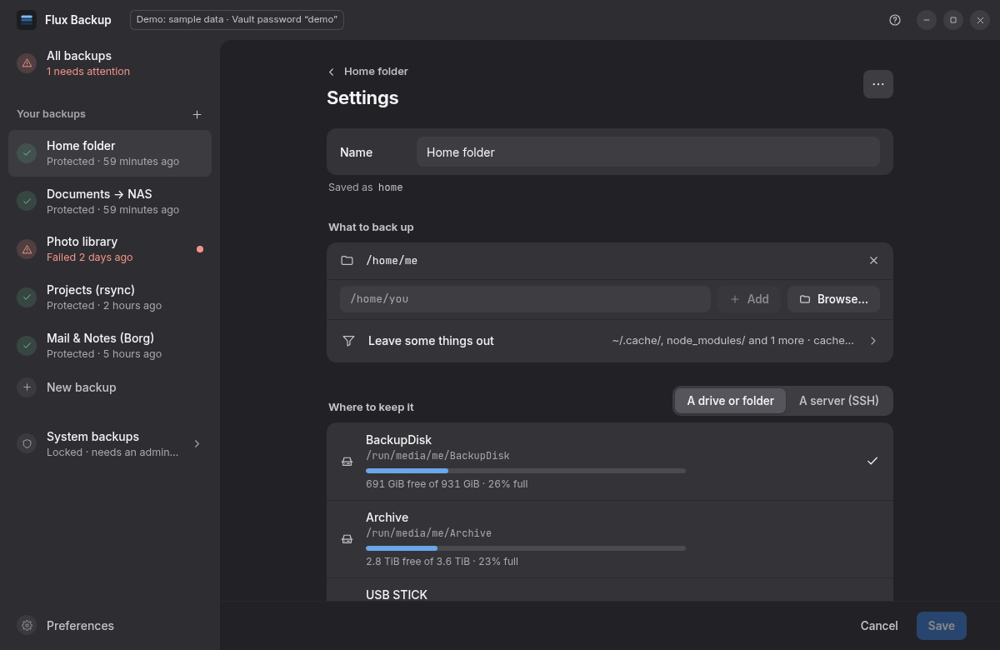
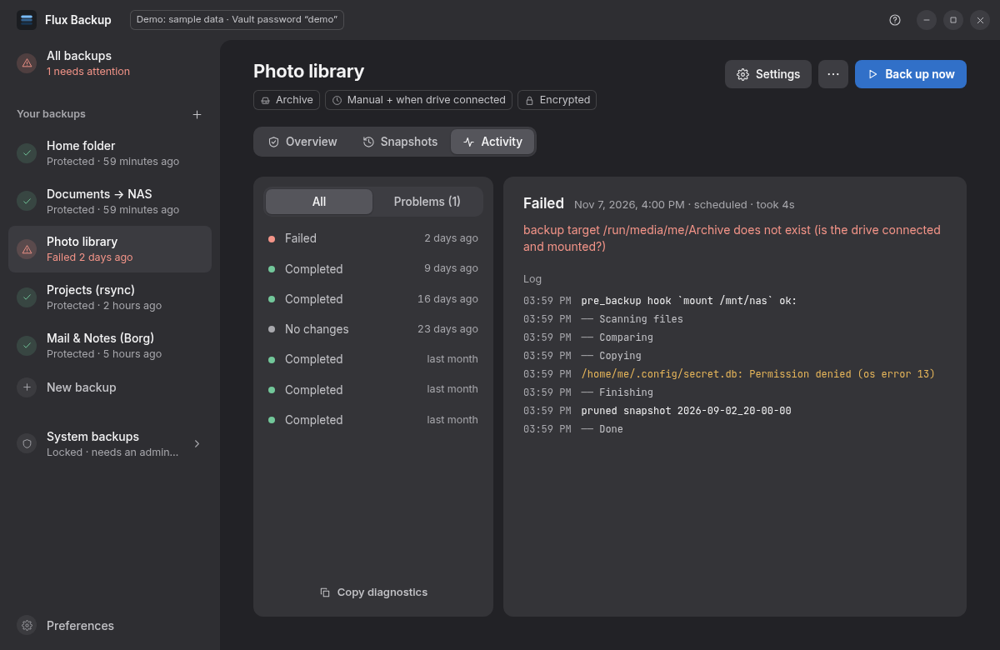
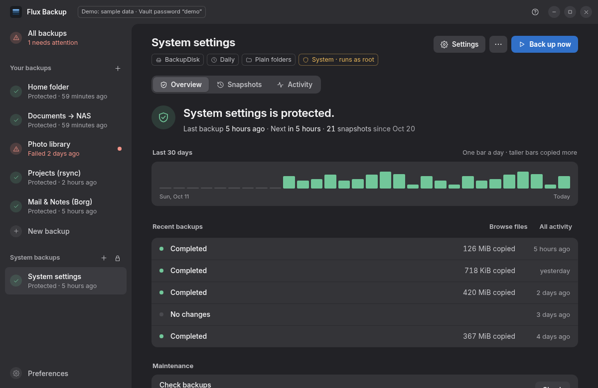
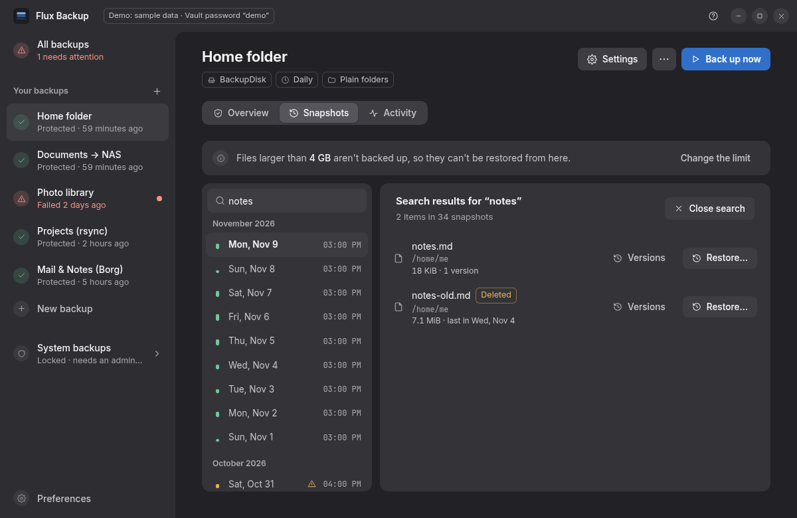
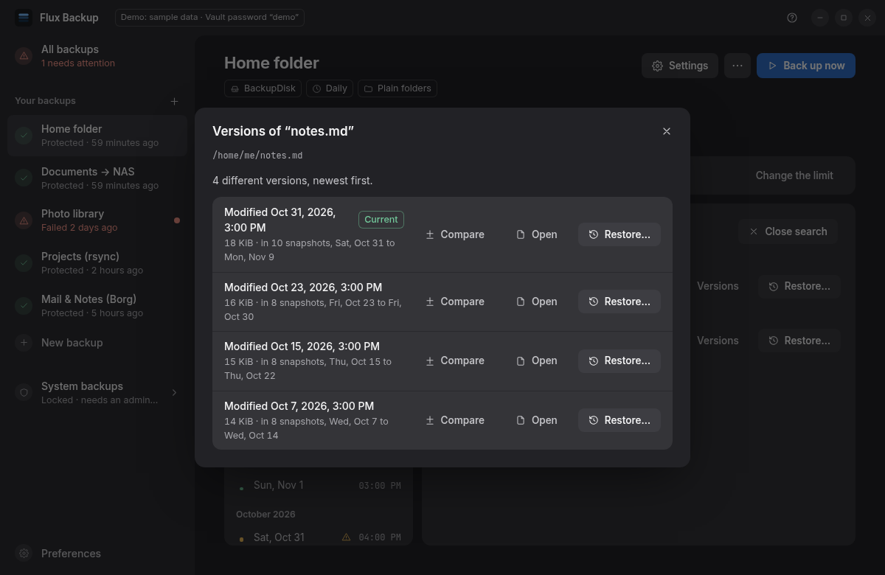
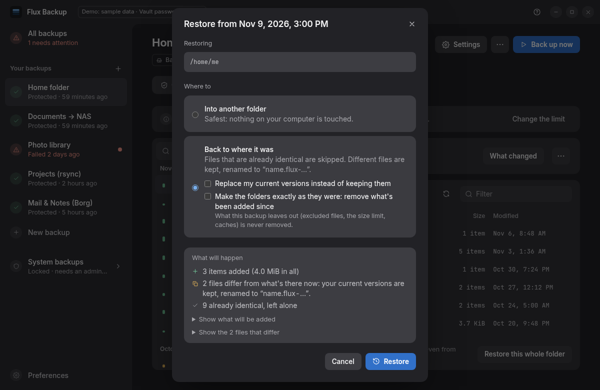
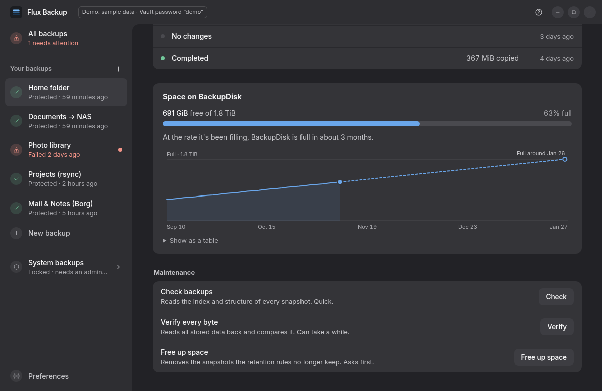
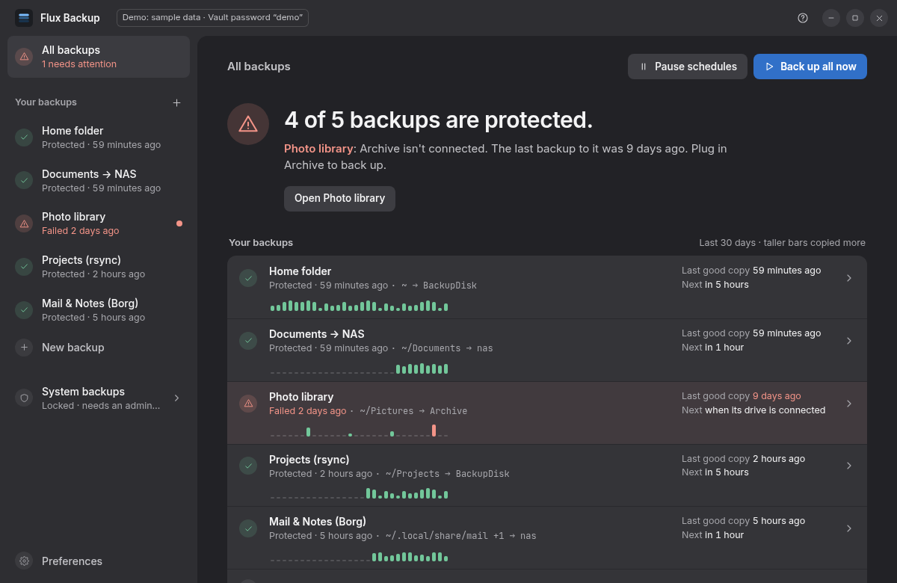
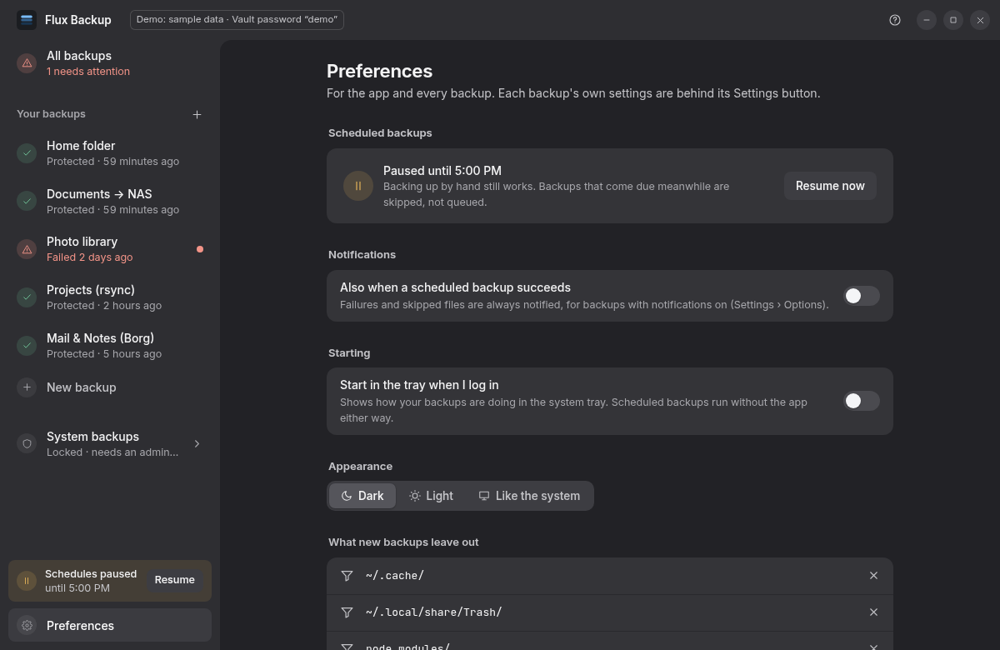
The flux command
flux share the same profiles and see each other's backups.flux diagnostics for bug reports.--json, and exit codes tell “finished, but some files were skipped” apart from failure.flux profile create home --source ~ \
--target /run/media/$USER/Backup
flux backup home # take a snapshot
flux snapshots home # list snapshots
flux ls home ~/Documents -l # browse one, instantly
flux restore home ~/Documents/report.odt
flux diff home --live # changed since the last snapshot
flux find home '*.odt' -i # search every snapshot
flux history home ~/thesis.tex # every version of a file
flux prune home --dry-run # what retention would remove
flux mount home ~/snapshots # snapshots as read-only folders
flux pause --tomorrow # skip tonight's scheduled backups
flux profile export home -f borgmatic
Performance
Measured on 1 GiB of test data (100,000 small files plus 20 large ones) on tmpfs, on a 16-core machine: the median of three runs of bench/bench.sh, with rsync 3.5 and Borg 1.4.5. Snapshots were checked byte for byte.
rsync -aHAX --link-dest, Back in Time's approach
| Scenario | Flux | rsync |
|---|---|---|
| Initial full backup | 0.46 s | 4.3 s |
| No changes, new snapshot | 0.26 s | 7.7 s |
| 1% of small files and 1 large file changed | 0.26 s | 7.7 s |
repokey-blake2, zstd,3 compression
| Scenario | Flux | Borg |
|---|---|---|
| Initial backup | 1.7 s | 15.8 s |
| No changes, new snapshot | 0.51 s | 8.2 s |
| 1% of small files and 1 large file changed | 0.51 s | 8.2 s |
| Repository size | 864 MiB | 869 MiB |
Much of the gap comes from Flux using every core where rsync is single-threaded, so expect
a smaller difference on spinning disks, where I/O dominates. The benchmark script is
bench/bench.sh in the repository.
Install
Each release ships packages for the common distributions and an AppImage for everything else.
The app, the flux command, the system-backup helper, man pages and completions.
Everything in one package, including system backups through polkit.
AppImage Any distributionThe app and flux. System backups need a package, because root can't run programs from inside an AppImage.
Needs Rust 1.91 or newer. The app also needs Node.js 20+ and WebKitGTK 4.1.
packaging/prepare-dist.sh # flux, flux-helper, man pages, completions
sudo PREFIX=/usr packaging/install.sh
Flux 0.3 is a young release. As with any new backup tool, keep another copy of anything precious until you trust it. The threat model describes what Flux protects against, and the Vault format is documented in full.
The user guide walks through it, then covers restoring, schedules, retention, Vault passwords and system backups.